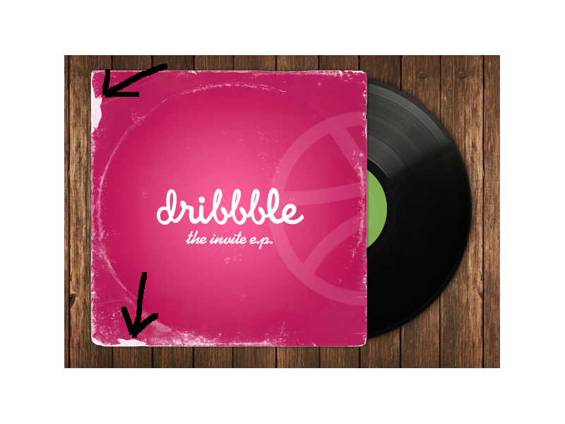

Intro:
This page specifically targets what you should be paying attention to when choosing an album from a place that sells records. Most likely you’ll be out at stores that sell used albums and there are many to sift through before finding that diamond in the rough. This section doesn’t really pertain to brand new records (obviously) and should only be considered a loose guideline in choosing an album for an appropriate price.
First up: The Cover
- Can be referred to as the carbord sleeve or record/album jacket
- Be sure to look at the cover thoroughly. By this I mean to look for any kind of damage cause to the album such as scuffs, tears, markings and the like. This should be one of the determining factors of the price for the album (See arrows in the picture).
- You should also look for any damage to the accessories that come with the album as well. Some albums come with books and other media inside of them which are common for children albums. If they are missing then the price should reflect that.
- Some albums can also come with the original shrink wrap along with the price and promotional stickers as well. It’s really your choice to keep it or not but it does add value to the record to keep the original content you can with the record as well as adding a little extra protection for the cover itself.
Next: The Inner Sleeve
- Can be referred to as the inner bag, record sleeve, dust sleeve, and album liner
- The inner sleeve is very important for the protection of the record itself. You would want to be sure the album at least comes with one so that you can avoid damage to the album.
- All albums come with a factory inner sleeves. The album will be worth more with the original but some will come with a replacement. Be sure to do your research before knowing which is what.
- The factory inner sleeves can come in all varieties. There are some that come with promos of other albums sold by the distributor, there are also ones that will list the titles of the tracks of the album along with the lyrics of the tracks as well.
- Most likely if you are purchasing a used album, the inner sleeve that comes with it will be torn down the side from the record being put back and pulled out. Be sure that the record is inserted into the sleeve correctly to avoid this from happening.
Now Comes the Album
- This is what we’ve came for! The album is obviously the most important part of this whole venture. What’s the point in buying it if the record is damaged? Hopefully I can give you some insight to what you need to look for.
- First and foremost: If there is any doubt that you might have in the record, look for a record player that you could possibly test it on. Some shops will offer this to their customers to settle any doubts they might have over the quality. Remember though, not all shops will have this option.
- Pull the record out of the cover and sleeve to check it out. Be sure to look for any obvious damage to the surface of the record such as scratches, scuffs, tears, cracks, mold and anything else you can think of. Light marks and scratches shouldn’t be that much of a problem in regards to value but you want to ensure that the record plays.
- Scratches come in all kinds of shapes, sizes and directions. Scratches that go across the album (from record label to edge of record) can cause music to skip or crack depending on the severity and depth of the scratch but tend to interfere less with the quality of the music.
- The scratches that tend to be more worrisome are the ones that travel along the grove of the record, this includes large scuff marks. This can be troublesome for quality since the needle will be traveling this path and can cause distortion to the music or could move of track if there is nothing there to keep it in place.
What's Up with The Center Sticker Label
- The center sticker is a vital part of the record because not only does it hold the title of the record and the track listing, it also contains information that can identify the version of your record.
- People mainly refer to the record label as the company who produces it but here in this instance it’s the actual sticker placed in the center of the record.
- You might be asking why there are multiple versions of the same record? Well for starters, the US can’t produce all the world’s records so there has to be multiple producers to meet that kind of demand therefore they produce different versions. Other reasons could be that they are promotional albums that contain extra media, re-releases and remasters for later years and even making records from 140 grams to 180 or even up to 200 grams!
- If you are interested in what version you own, you can first identify the catalog number which is usually the first set of numbers that pop out at you. Then you can locate the what is referred to the matrix numbers that further identifies the version. The matrix numbers are used to keep track of the records within the manufacturing process.
- For more information about versioning and identifying your records, Discogs offers an extensive library of information about any and all records. They are the most prominent resource on the internet for everything that has to do with music as well as provide a platform to resell all media types of music.
Record alignment
- An important thing to look for is to make sure your record is as straight as possible before your purchase it. Some people tend to not take care in the way they store records which will result in them warping out of shape.
- It’s as simple as taking the record out of the sleeve and looking at it from one side of the edge to the next, like checking the length and straightness of a pipe or a bat. Give it a little bit of a spin to make sure all the sides of the edge line up.
- Not all records are going to be absolutely straight. This is okay though! Most records can still play just fine if it even has the slightest curve to it. You just don’t want the record to ripple like the body of an ocean when it is spinning on the turntable.